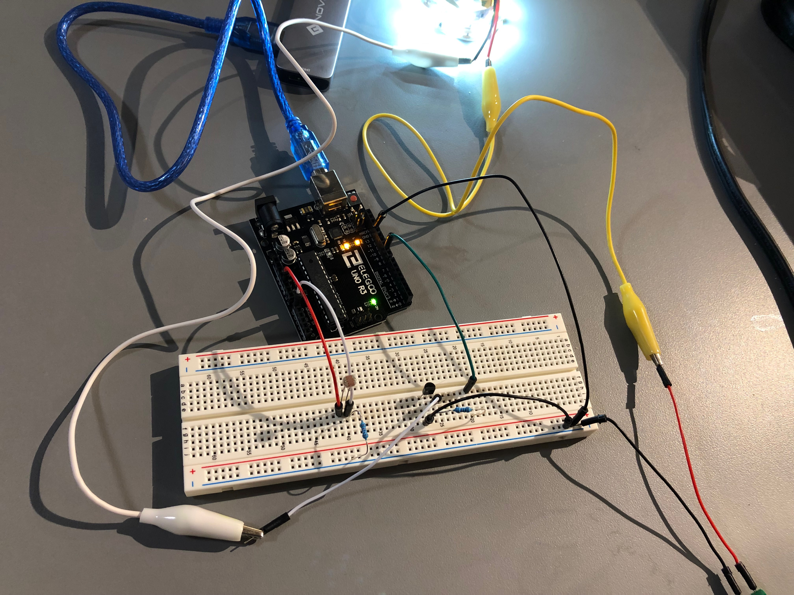
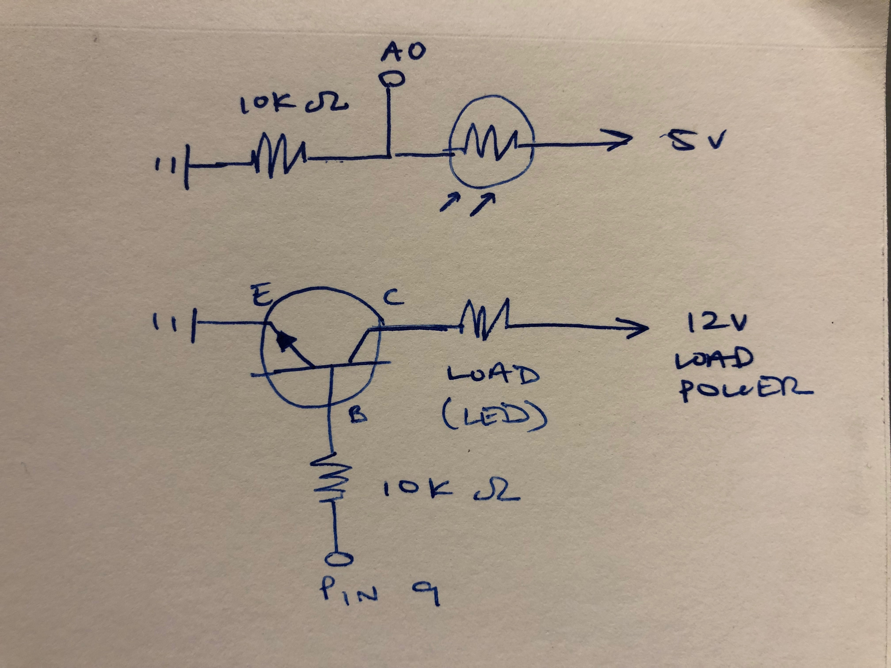

Assignment 4: High(er) voltage and transistors
Circuit operation

This circuit adjusts an LED strip's brightness based off of its read output from an LDR. When the LDR reads low light, it will dim the LED strip, and when it reads high light, it'll brighten.

LDR and LED strip schematic

For the LED strip:
My LED strip is 100 LEDs long, cut from 300 total that use 18 W.
100 / 300 x 18W = 6W
The load power supplies 12 V from the wall, and I = P / V, so I = 6W / 12V, therefore I = 0.5 A
0.5A is less than the max current that the transistor is rated for (0.6A).
I used a 10K Ω resistor between the Arduino and transistor, even though any resistor over 250 Ω would be sufficient, as
5V / .02A = 250Ω
For the LDR:
5V = 200mA x R
5V / 0.2A = R
R = 25Ω
I chose to use a 10K Ω resistor, as we did in class examples, even though any resistor larger than 25 Ω would have sufficed.